Last updated: 2018-11-14
workflowr checks: (Click a bullet for more information) ✖ R Markdown file: uncommitted changes
The R Markdown file has unstaged changes. To know which version of the R Markdown file created these results, you’ll want to first commit it to the Git repo. If you’re still working on the analysis, you can ignore this warning. When you’re finished, you can run wflow_publish to commit the R Markdown file and build the HTML.
✔ Environment: empty
Great job! The global environment was empty. Objects defined in the global environment can affect the analysis in your R Markdown file in unknown ways. For reproduciblity it’s best to always run the code in an empty environment.
✔ Seed:
set.seed(20181026)
The command set.seed(20181026) was run prior to running the code in the R Markdown file. Setting a seed ensures that any results that rely on randomness, e.g. subsampling or permutations, are reproducible.
✔ Session information: recorded
Great job! Recording the operating system, R version, and package versions is critical for reproducibility.
✔ Repository version: c828177
wflow_publish or wflow_git_commit). workflowr only checks the R Markdown file, but you know if there are other scripts or data files that it depends on. Below is the status of the Git repository when the results were generated:
Ignored files:
Ignored: analysis/figure/
Ignored: analysis/shiny/.Rhistory
Unstaged changes:
Modified: analysis/lecture12.Rmd
########################################################
#### Go over HW 7 Shiny apps, check in on projects
####
#### Read https://juliasilge.com/blog/you-must-allow-me/ for next time
####
#### Today: Machine learning & clustering
#### Projects due next week (in-class presentations)
######################################################
#=============================================================
## Principal components analysis
## Very awesome and intuitive description of PCA:
## https://stats.stackexchange.com/questions/2691/making-sense-of-principal-component-analysis-eigenvectors-eigenvalues/140579#140579
#=============================================================
## Exploratory method for high-dimensional data (many similar methods exist,
## e.g. linear discriminant analysis)
##
## PCA = linear algebra technique to emphasize axes of variation in the data,
## bring out strong patterns in a dataset, offers new coordinate system to
## emphasize variation in the data.
##
## Note 1: There are as many PCs as there are variables
## Note 2: Only works for numeric variables
## Note 3: Usually need to standardize the data (i.e., scale each column to have
## mean zero and unit sd) prior to PCA
library(tidyverse)-- Attaching packages ------------------------------------------------------------------------------- tidyverse 1.2.1 --v ggplot2 3.1.0 v purrr 0.2.5
v tibble 1.4.2 v dplyr 0.7.7
v tidyr 0.8.2 v stringr 1.3.1
v readr 1.1.1 v forcats 0.3.0-- Conflicts ---------------------------------------------------------------------------------- tidyverse_conflicts() --
x dplyr::filter() masks stats::filter()
x dplyr::lag() masks stats::lag()library(cowplot)
Attaching package: 'cowplot'The following object is masked from 'package:ggplot2':
ggsavetheme_set(theme_bw())
library(mvtnorm) ## Package to simulate multivariate normal dataset.seed(12345)
cov <- matrix(c(1,0.6,0.6,1), byrow=2, nrow=2)
sim <- rmvnorm(100, mean=c(1,1), sigma = cov)
colnames(sim) <- c("var1", "var2")
## Let's fit a PCA
## Note: we used center = TRUE and scale = TRUE to standardize data!
sim_pca <- prcomp(sim, center=TRUE, scale=TRUE)$x
colnames(sim_pca) <- c("var1", "var2")
sim_df <- data.frame(rbind(data.frame(sim, type="Original variables"),
data.frame(sim_pca, type="PC1 & PC2")))
ggplot(sim_df, aes(var1, var2)) + geom_point() + facet_wrap(~type)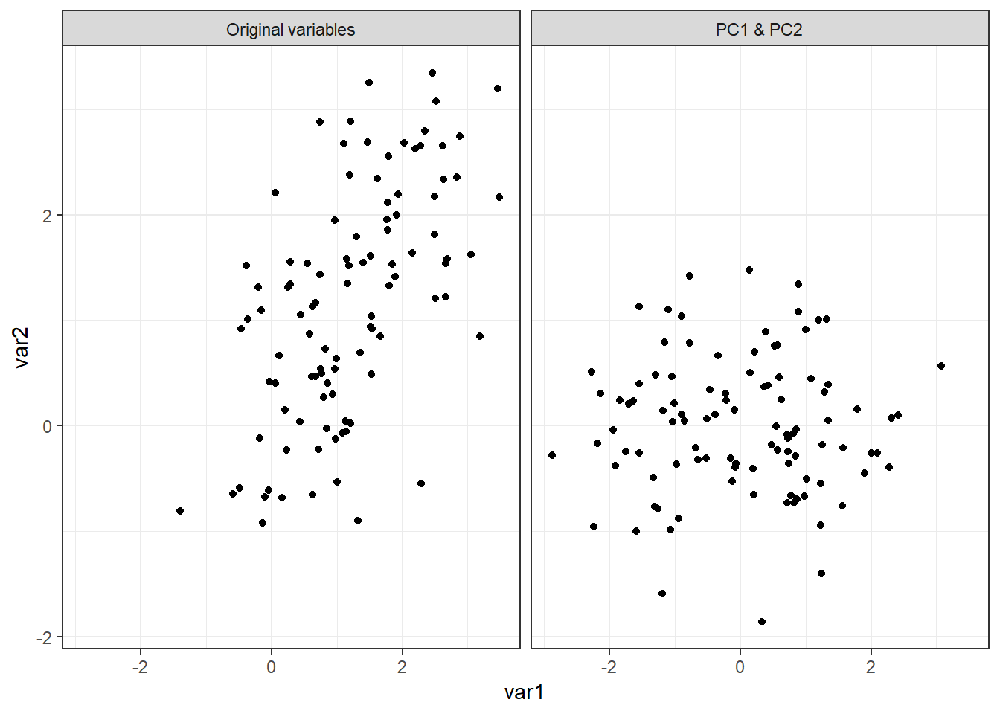
## Look at this nice visual example: http://setosa.io/ev/principal-component-analysis/library(GGally)
Attaching package: 'GGally'The following object is masked from 'package:dplyr':
nasadata(iris)
## Note: how well we can distiguish between species depends on the plotting strategy/chosen variables
ggpairs(iris, columns = 1:4, ggplot2::aes(colour=Species),
upper=list(continuous="blank"))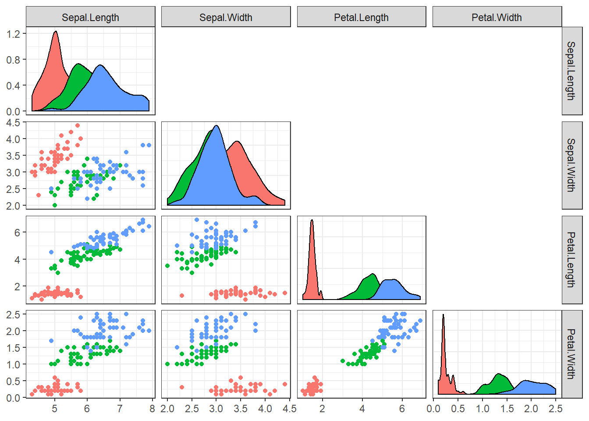
## Let's fit a PCA and look at the output
iris_pca <- prcomp(select(iris, -Species), center=TRUE, scale=TRUE)
summary(iris_pca)Importance of components:
PC1 PC2 PC3 PC4
Standard deviation 1.7084 0.9560 0.38309 0.14393
Proportion of Variance 0.7296 0.2285 0.03669 0.00518
Cumulative Proportion 0.7296 0.9581 0.99482 1.00000## Rotation matrix: loadings (sort of) represent the percent of variance
## explained by the variable
iris_pca$rotation PC1 PC2 PC3 PC4
Sepal.Length 0.5210659 -0.37741762 0.7195664 0.2612863
Sepal.Width -0.2693474 -0.92329566 -0.2443818 -0.1235096
Petal.Length 0.5804131 -0.02449161 -0.1421264 -0.8014492
Petal.Width 0.5648565 -0.06694199 -0.6342727 0.5235971## Actual principal components
head(iris_pca$x) PC1 PC2 PC3 PC4
[1,] -2.257141 -0.4784238 0.12727962 0.024087508
[2,] -2.074013 0.6718827 0.23382552 0.102662845
[3,] -2.356335 0.3407664 -0.04405390 0.028282305
[4,] -2.291707 0.5953999 -0.09098530 -0.065735340
[5,] -2.381863 -0.6446757 -0.01568565 -0.035802870
[6,] -2.068701 -1.4842053 -0.02687825 0.006586116## Standard deviation of components represents the percent of variation each component explains
iris_pca$sdev[1] 1.7083611 0.9560494 0.3830886 0.1439265## Compute variance explained:
## Note: by definition, PC1 explains the most variation, PC2 the second most variation, ...
(iris_pca$sdev)^2 / (sum(iris_pca$sdev^2))[1] 0.729624454 0.228507618 0.036689219 0.005178709## Double check PCs
PC_check <- as.matrix(scale(iris[,-5], center=TRUE, scale=TRUE)) %*% iris_pca$rotation
all.equal(PC_check, iris_pca$x)[1] TRUE## Now plot the PCs: PC1 vs PC2
iris_pca_dat <- cbind(iris, iris_pca$x)
ggplot(iris_pca_dat, aes(x=PC1, y=PC2, color=Species)) +
geom_point() +
stat_ellipse()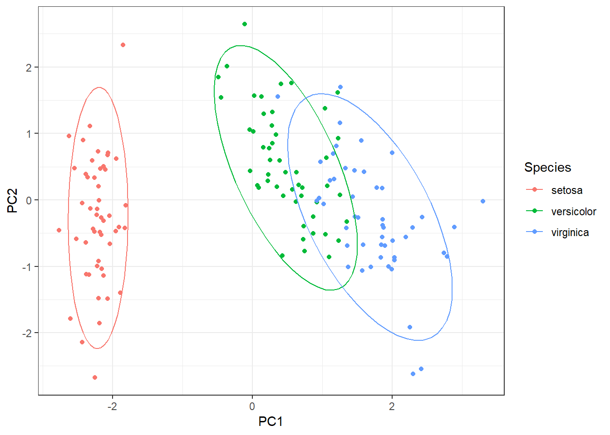
## PC1 vs PC3
ggplot(iris_pca_dat, aes(x=PC1, y=PC3, color=Species)) +
geom_point() +
stat_ellipse()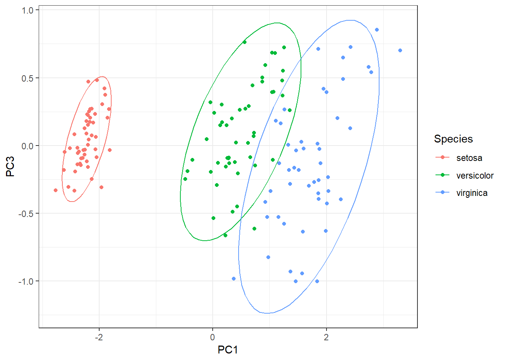
## Visualizing PCA: Loadings
## => Petal.Length/Petal.Width load positively on PC1 but not PC2
## => Sepal.Width is orthogonal to petals (i.e., it captures uncorrelated information)
loadings <- as.data.frame(iris_pca$rotation)
loadings$variable <- rownames(loadings)
arrow_style <- arrow(length = unit(0.05, "inches"), type = "closed")
ggplot(loadings) +
geom_segment(x=0, y=0, aes(xend=PC1, yend=PC2), arrow=arrow_style) +
geom_text(aes(x=PC1, y=PC2, label=variable), size=3, color='red') +
xlim(-1.,1) +
ylim(-1.,1.) +
coord_fixed()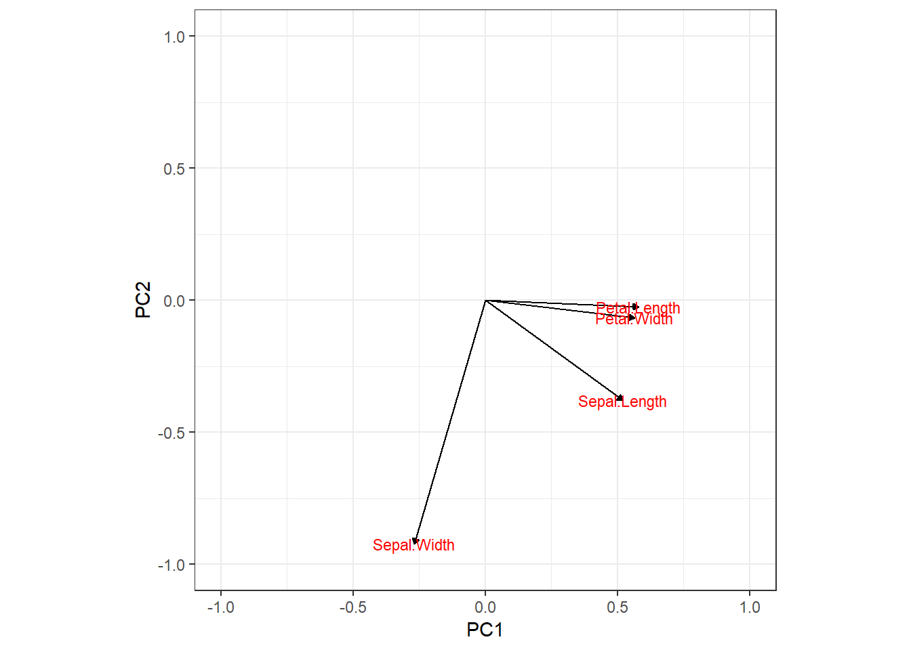
#-------------------------------------------------------------
## How many principal components to choose in practice?
#-------------------------------------------------------------
## Recall: as many principal components as variables
## However, goal here is to reduce complexity of the data and summarize with
## fewer dimensions
## Visualizing PCA: Variance explained
var_explained <- data.frame(value=(iris_pca$sdev)^2 / (sum(iris_pca$sdev^2)),
PC = colnames(iris_pca$x))
ggplot(var_explained, aes(x = PC, y = value)) +
geom_bar(stat = "identity")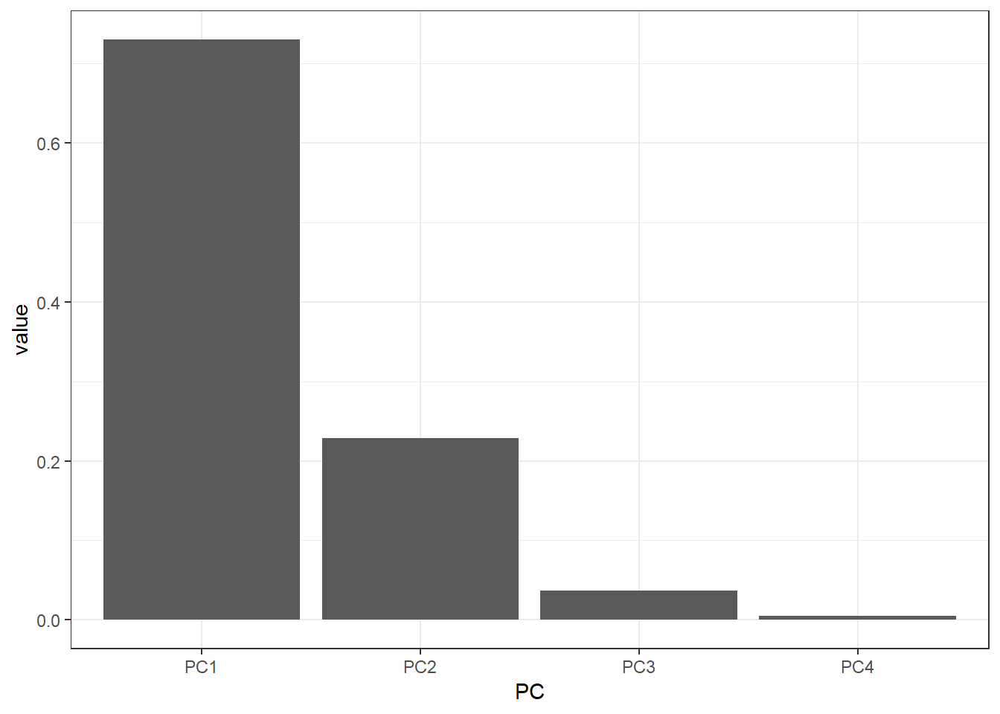
cumsum(var_explained$value)[1] 0.7296245 0.9581321 0.9948213 1.0000000## Base R graphics
plot(iris_pca)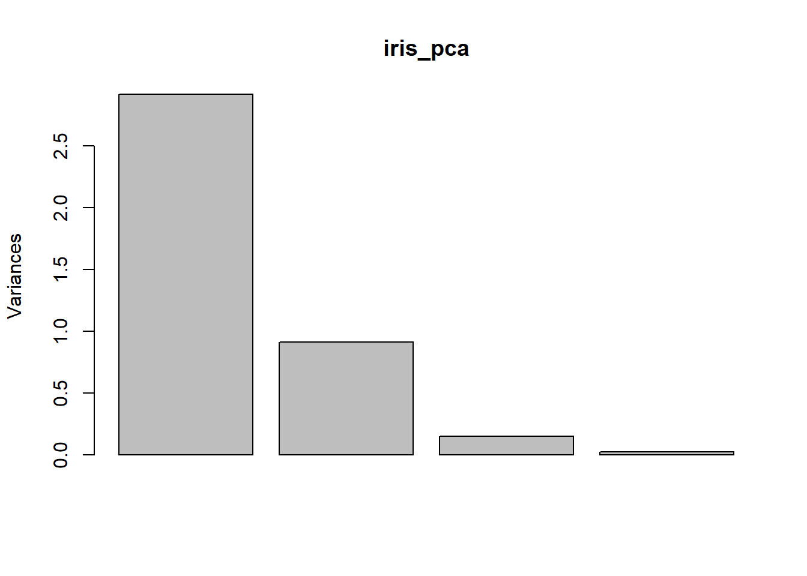
biplot(iris_pca) ## Biplot represents both observations and variables on the same plot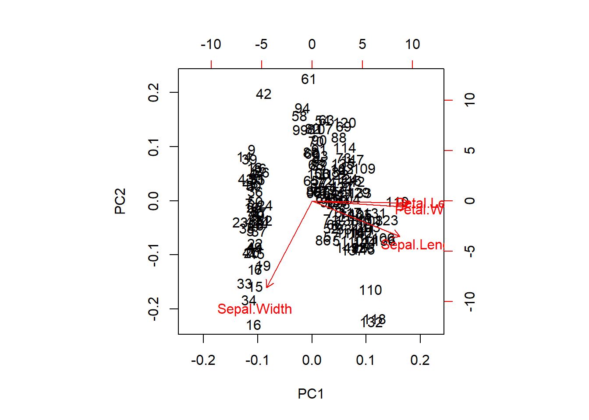
screeplot(iris_pca)pairs(iris_pca$x, col=iris$Species, pch=20, cex=2)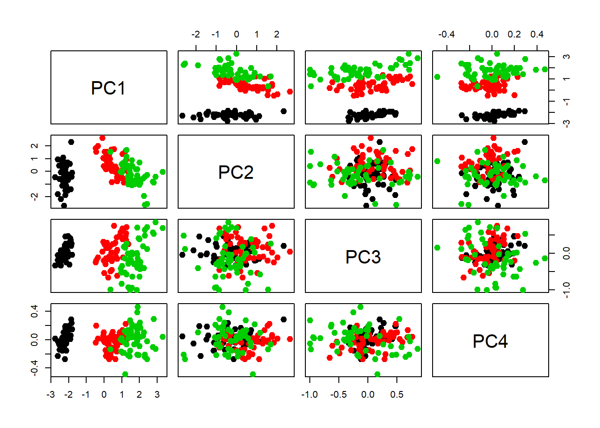
### Chalkboard: So what does PCA actually do? Link with singular value decomposition
scale_iris <- scale(select(iris, -Species), center=TRUE, scale=TRUE)
SVD <- svd(scale_iris)
pairs(t(t(SVD$u) * SVD$d), col=iris$Species, pch=20, cex=2)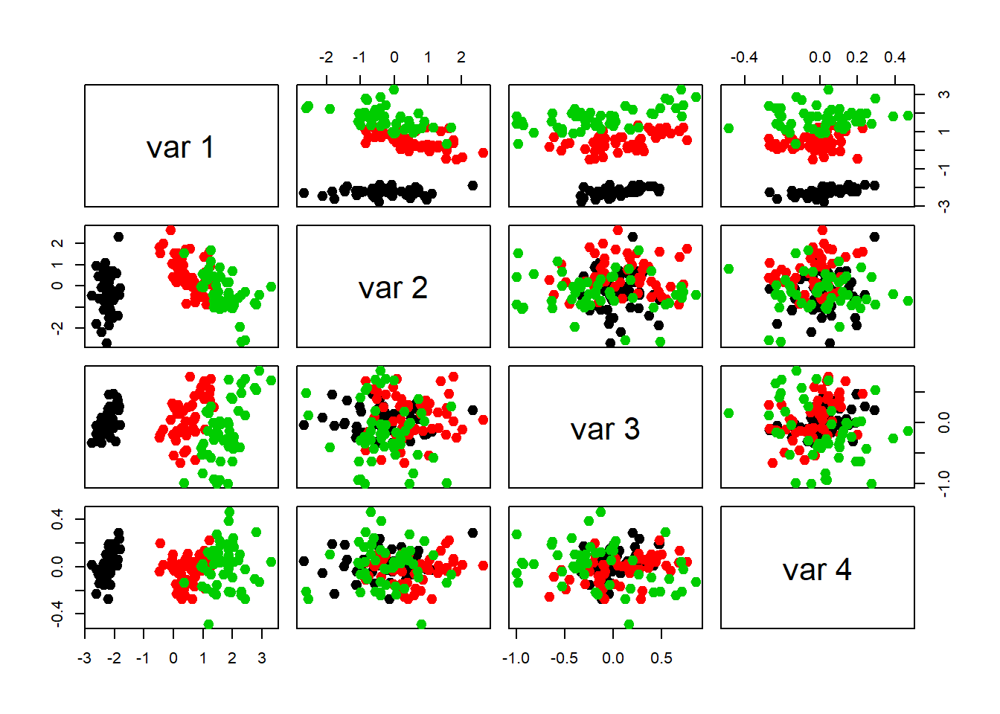
SVD.2 <- svd(t(scale_iris))
pairs(SVD.2$v, col=iris$Species, pch=20, cex=2)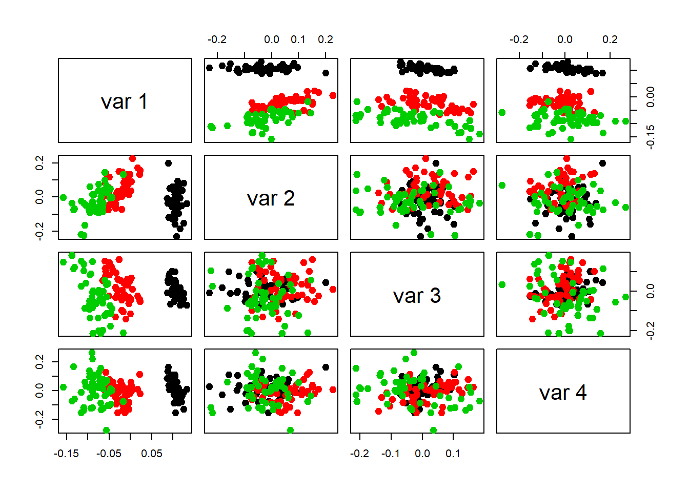
#-------------------------------------------------------------
## In class exercise:
## Read in wine.csv dataset. Note that the Cultivar variable is
## categorical and should be removed prior to the PCA analysis.
## (1) Create scatterplots between all pairs of variables. Are Cultivar groupings obvious?
## (2) We will use PCA analysis to identify the variables contributing
## the most to variation in the data, and try to recover the Cultivar clusters.
## (3) How many PC's seem appropriate here? Which variables contribute
## the most to the first principal component?
## (4) Create plots of loading lines (the rotation matrix) for PC1 and PC3.
## (5) Create scatterplots of PC1 vs PC2 and PC1 vs PC3. Which PCs, if any, discriminate
## among Cultivars. Is the PCA better at discriminating cultivars than the
## original scatterplots?
#-------------------------------------------------------------
wine <- read_csv("wine.csv")
## Note: how well we can distiguish between species depends on the plotting strategy/chosen variables
ggpairs(wine, columns = 2:9, ggplot2::aes(colour=Cultivar),
upper=list(continuous="blank"))
wine_pca <- prcomp(select(wine, -Cultivar), center=TRUE, scale=TRUE)
plot(wine_pca)
summary(wine_pca)
wine_pca$rotation
loadings <- as.data.frame(wine_pca$rotation)
loadings$variable <- rownames(loadings)
arrow_style <- arrow(length = unit(0.05, "inches"), type = "closed")
ggplot(loadings) +
geom_segment(x=0, y=0, aes(xend=PC1, yend=PC2), arrow=arrow_style) +
geom_text(aes(x=PC1, y=PC2, label=variable), size=3, color='red') +
xlim(-1.,1) +
ylim(-1.,1.) +
coord_fixed()
wine_pca_labels <- data.frame(wine_pca$x, Cultivar=factor(wine$Cultivar))
ggplot(wine_pca_labels) +
geom_point(aes(x=PC1, y=PC2, color=Cultivar))
ggplot(wine_pca_labels) +
geom_point(aes(x=PC1, y=PC2))
## Going a little bit further, PCA in real analyses:
## (1) Genes Mirror Geography in Europe, Novembre et al (2008)
## (2) Genomic Insights into the Peopling of the Southwest Pacific, Skoglund et al (2016)#=============================================================
## Clustering analysis: K-means, hierarchical clustering, mixture models, ....
#=============================================================
## Clustering = family of approaches to identify previously unknown or
## undetected groupings in data
## We need:
## (1) Measure of distance and/or similarity among data points
## (2) Clustering algorithm to create the groupings
## We will make use of the Ruspini data set for this part
library(cluster)
data(ruspini)
plot(ruspini)
## Clustering methods are based on "distance" between points.
## As with PCA, in order to standardize these "distances" we need to standardize the data,
## i.e., we should scale each column of data to have mean zero and unit sd
rus_scaled <- scale(ruspini)
plot(rus_scaled, pch=20, cex=2)
#=============================================================
## K-means algorithm
## Cluster data into k groups of equal variance by minimizing
## the within-cluster sum of squares
#=============================================================
km <- kmeans(rus_scaled, centers=2)
plot(rus_scaled, col=km$cluster, pch=20, cex=2)
points(km$centers, pch=3, cex=2) ## this adds the centroids
#text(km$centers, labels=1:4, pos=2, cex=2) ## this adds the cluster ID
## What did this algorithm just do?
## Chalkboard Discussion of K-means clustering
##
## 1. Place k "centroids" in the data
## 2. Assign point to cluster k based on Euclidean distance
## 3. Re-compute each of the k centroids based on means of associated points
## 4. Re-assign centroids
## 5. Repeat until convergence
## => Look at this: https://www.naftaliharris.com/blog/visualizing-k-means-clustering/
## How to choose number of clusters k?
## Simplest method: run with several different values for k.
## For each k, calculate the within cluster sum of squares (WSS)
## Plot k versus WSS, look for the "elbow" (very subjective!)
wss <- rep(NA, 10)
for(k in 1:10){
wss[k] <- kmeans(rus_scaled, centers=k)$tot.withinss
}
plot(1:10, wss, type='l', xlab='k', ylab='WSS')
## Let's compare the results for K=4 and K=5 clusters: Which looks better to you?
km_4 <- kmeans(rus_scaled, centers=4, nstart=10)
km_5 <- kmeans(rus_scaled, centers=5, nstart=10)
rus_df <- data.frame(rbind(cbind(rus_scaled, Clusters=km_4$cluster, K="K=4"),
cbind(rus_scaled, Clusters=km_5$cluster, K="K=5")))
rus_df$Clusters <- factor(rus_df$Clusters)
rus_df <- rus_df %>% mutate(x=as.numeric(as.character(x)),
y=as.numeric(as.character(y)))
ggplot(rus_df, aes(x,y, color=Clusters)) +
geom_point() +
facet_wrap(~K)
## Note: broom package also works here!
library(broom)
rus_scaled %>%
kmeans(5) %>%
augment(rus_scaled) %>%
head()
rus_scaled %>%
kmeans(5) %>%
tidy()
## Some caveats:
## (1) Clustering depends on initial conditions
## (2) Algorithm guaranteed to converge, but maybe on local optima
## (3) No way to know if clusters have meaning beyond the math (but this is true for
## all clustering methods!)
#-------------------------------------------------------------
## In class exercise:
## Perform K-means on the wine data, using the elbow method to
## identify the number of clusters k.
## Repeat for 3 different initializations (set seed each time),
## and compare your results. Are the results consistent? Do
## cultivars seem to belong to, or not, a specific cluster?
#-------------------------------------------------------------
wine_scaled <- scale(wine[,-1])
wss <- rep(NA, 20)
for(k in 1:20) {
wss[k] <- kmeans(wine_scaled, centers = k)$tot.withinss
}
plot(1:20, wss, type = "l")
abline(v=3, lty=2)
km_run <- matrix(NA, nrow=nrow(wine_scaled), ncol=3)
for(i in 1:3) {
set.seed(i+1)
km_run[,i] <- kmeans(wine_scaled, centers = 3)$cluster
}
#=============================================================
## Hierarchical clustering and dendrograms
## Difference between different linkage types (advantages, disadvantages)
## Difference between agglomerative (bottom up) and divisive (top down)
#=============================================================
## Useful when data have a hierarchical structure
## Very commonly used in genomics applications!
## Stable since no initialization step
##
## At each step, "closest" genes are clustered, then calculate the distance
## between this new group and remaining ones
## Linkage: simple, complete, average, ...
##
## K chosen according to the tree
d <- dist(rus_scaled)
hc <- hclust(d, method="complete")
## Look at the result
plot(hc)
rect.hclust(hc, k=4)
## Without the leaf labels
plot(as.dendrogram(hc), leaflab="none")
rect.hclust(hc, k=4)
## Look at how the data are clustered with 4 clusters
cluster.complete <- cutree(hc, k=4)
plot(rus_scaled, col=cluster.complete, cex=2, pch=20)
## Chalk-board Discussion of Hierarchical Clustering
### With 5 clusters
cluster.complete <- cutree(hc, k=5)
plot(rus_scaled, col=cluster.complete, cex=2, pch=20)
### Cluster with single linkage rather than complete linkage
hc.single <- hclust(d, method="single")
plot(as.dendrogram(hc.single), leaflab="none")
rect.hclust(hc.single, k=4)
par(mfrow=c(1,2))
cluster.single <- cutree(hc.single, k=4)
plot(rus_scaled, col=cluster.single, pch=20, cex=2, main="Single Linkage")
clust <- cutree(hc, k=4)
plot(rus_scaled, col=clust, pch=20, cex=2, main="Complete Linkage")
#-------------------------------------------------------------
## In class exercise:
## Perform hierarchical clustering on the wine data, using
## complete, single, and average linkage. How stable are results
## for different types of linkage?
#-------------------------------------------------------------
#=============================================================
## Comparing data clusterings : the (adjusted) Rand index
#=============================================================
## Related to accuracy:
## a = # of pairs of observations that are in the same cluster in X and same cluster in Y
## b = # of pairs of observations that are in different clusters in X and different clusters in Y
## c = # of pairs of observations that are in the same cluster in X and different clusters in Y
## d = # of pairs of observations that are in differenet clusters in X and the same cluster in Y
## Rand index = (a+b) / (a+b+c+d)
## Rand index is a measure of similarity between two data clusterings (between 0 and 1)
library(clusteval)
cluster_similarity(km_4$cluster, km_5$cluster, similarity = "rand")
## The adjusted Rand index is adjusted for the chance grouping of elements:
library(mclust)
adjustedRandIndex(km_4$cluster, km_5$cluster)
## 1 = perfect greement, 0 = clusterings do not agree on any pair of points
#=============================================================
## Next time:
## Regular expressions, Sentiment analysis, quick review for final take-home exam!
#=============================================================sessionInfo()R version 3.5.1 (2018-07-02)
Platform: x86_64-w64-mingw32/x64 (64-bit)
Running under: Windows 10 x64 (build 17134)
Matrix products: default
locale:
[1] LC_COLLATE=English_United States.1252
[2] LC_CTYPE=English_United States.1252
[3] LC_MONETARY=English_United States.1252
[4] LC_NUMERIC=C
[5] LC_TIME=English_United States.1252
attached base packages:
[1] stats graphics grDevices utils datasets methods base
other attached packages:
[1] GGally_1.4.0 mvtnorm_1.0-8 cowplot_0.9.3 forcats_0.3.0
[5] stringr_1.3.1 dplyr_0.7.7 purrr_0.2.5 readr_1.1.1
[9] tidyr_0.8.2 tibble_1.4.2 ggplot2_3.1.0 tidyverse_1.2.1
loaded via a namespace (and not attached):
[1] tidyselect_0.2.5 reshape2_1.4.3 haven_1.1.2
[4] lattice_0.20-35 colorspace_1.3-2 htmltools_0.3.6
[7] yaml_2.2.0 rlang_0.3.0.1 R.oo_1.22.0
[10] pillar_1.3.0 glue_1.3.0 withr_2.1.2
[13] R.utils_2.7.0 RColorBrewer_1.1-2 modelr_0.1.2
[16] readxl_1.1.0 bindrcpp_0.2.2 bindr_0.1.1
[19] plyr_1.8.4 munsell_0.5.0 gtable_0.2.0
[22] workflowr_1.1.1 cellranger_1.1.0 rvest_0.3.2
[25] R.methodsS3_1.7.1 evaluate_0.12 labeling_0.3
[28] knitr_1.20 broom_0.5.0 Rcpp_0.12.19
[31] scales_1.0.0 backports_1.1.2 jsonlite_1.5
[34] hms_0.4.2 digest_0.6.18 stringi_1.2.4
[37] grid_3.5.1 rprojroot_1.3-2 cli_1.0.1
[40] tools_3.5.1 magrittr_1.5 lazyeval_0.2.1
[43] crayon_1.3.4 whisker_0.3-2 pkgconfig_2.0.2
[46] MASS_7.3-50 xml2_1.2.0 lubridate_1.7.4
[49] reshape_0.8.8 assertthat_0.2.0 rmarkdown_1.10
[52] httr_1.3.1 rstudioapi_0.8 R6_2.3.0
[55] nlme_3.1-137 git2r_0.23.0 compiler_3.5.1 This reproducible R Markdown analysis was created with workflowr 1.1.1